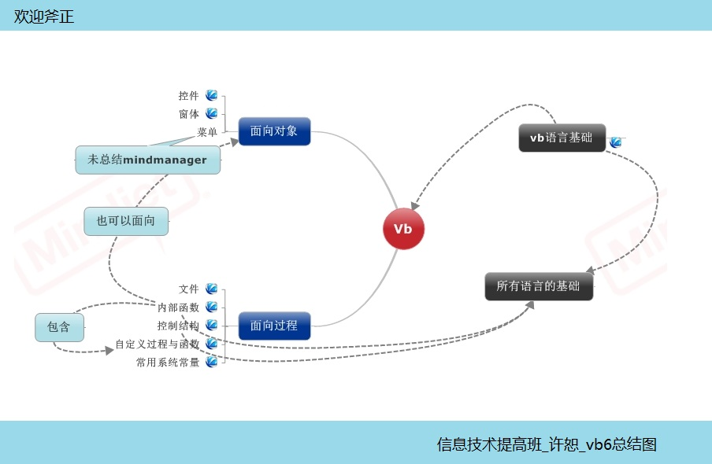
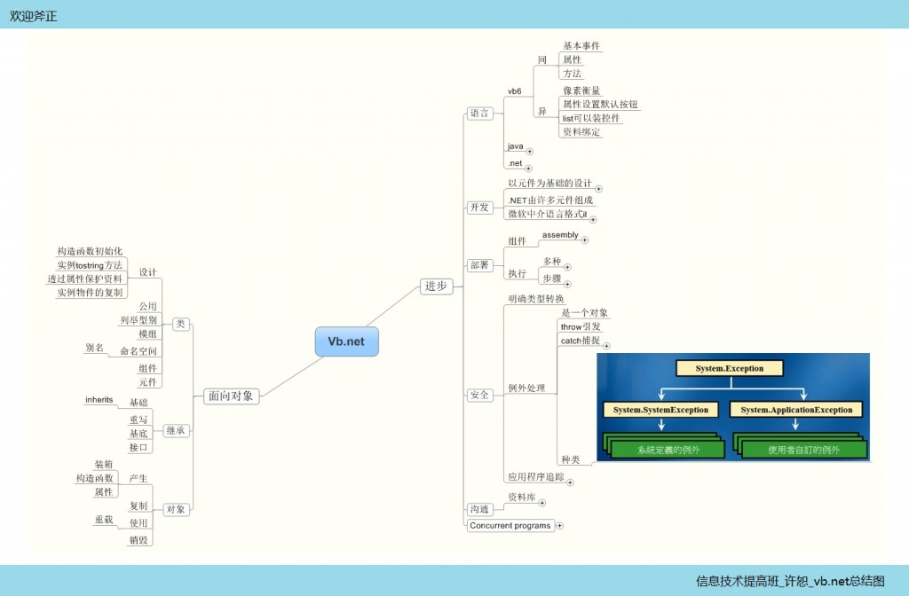

从vb6走来，在c#中停留了一会，现在vb.net的门已经慢慢弄开启，在看视频的时候发现，基础性的东西好多是大同小异，在编程的世界里，我还是“小鸟”，正在等待自己羽翼丰满！但是作为“鸟”的基础，应该说我们打的稍微有点底了！
回头看看vb6的基础：

vb.net在基本事件基本方法和数据基础上是和vb6相似，有些地方甚至是一样的，微软做vb.net尽量照顾到了vb使用者的习惯，这就是全心全意为人民服务的理念！当然，vb.net是个革命性的产品，它必然有其独到的地方，这幅图就介绍了vb.net进步的地方：

有着个对比可见，vb.net和vb6的连贯性，虽然vb.net增加的功能很强大，但是基本的编写手段没有发生多大的变化，微软之所以强大，这不失为一个好的原因，微软的产品尽管升级了但是，很方便的，或者花费较少的时间，就可以让编写代码的人员完成跨越！不论是产品的品质还是维护消费者忠诚度上，微软下足了功夫！
在下篇文章中，咱们将探讨vb.net的几个特色，请大家关注！斧正！